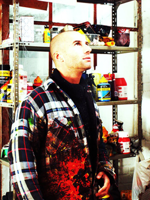

KENISMAN (°1978, Belgian, Antwerp-based artist)
Studied art at the Academy of Science and Art in Brussels, Belgium.
Kenisman questions his environment and the individual.
He’s interested in the inner person, the individual behind every mask.
He literally scrapes off the facade and let us look into a much deeper and
more complex world. “It’s like looking at a soul through a keyhole”.
The works intrigue and fascinate, you can discover more than you would
expect at first glance. The artist affects your imagination, with every
artwork as a trigger to activate your own personal view, based upon your own mind. Your own dreams, fears and thoughts.
“there is no such thing as a wrong painted stroke, only an insecure one destroys." kenisman
“recognition is the beginning of change.” kenisman
In his most recent work, Kenisman investigates and explores in depth his own manifest.
THE MANIFESTO KENISMAN
"Every art. In any form whatsoever, is the strongest when it is created, performed and
established from the unconscious. The consciousness must be disabled during the creation process.
The cognitive consciousness contains unilateral biases. These are irreversible stored and inculcated by the environment, experiences and gathered knowledge.
Consciousness founds its action on the brains.
These are, without exception, each programmed to automatically link each observation to the stored knowledge and translate it into an image recognition and interpretation.
In this way, the consciousness impedes any form of powerful creation and imaging because the artist then always departs, or at a specific point in the process, will always start from this cognitive recognition and thinking pattern. The consciousness limits and suppresses in this way any innovative and powerful creation.”
KENISMAN
The art of Kenisman isn’t limited to the canvas only.
He wrote & directed his first feature film KARMA, which will conquer the film festivals this year. After successful screenings in Melbourne and Antwerp, this wayward movie has been purposely released online for free. Already more than 4500 people saw the movie worldwide in less than 2 months and gained great reviews from its audience.
Kenisman’s new film ZINA is in pre-production. Filming starts this year.
[[ Exhibitions Highlights ]]
solo - (S)in City - contemporary art & music happening - Military Hospital of Antwerp, Belgium.
solo - “ IN A ROOM ” - Cypres Galerie, Leuven, Belgium.
solo - UnVorsum - European Space Agency, The Hague, Netherlands.
solo - KARMA, screenings - Museum of Photography // cinema zuid, Antwerp, Belgium.
Music video Psychedelic Indian Fusion, Tikki Masala - artwork listed by ‘Worldpress internet top posts’ and elected as best video by ‘the daily psychedelic video’.
group - Artfestival ‘Motel manifest’, 12x9m facade painting ‘don’t think, let it flow’, Antwerp, Belgium.
{kind=link}